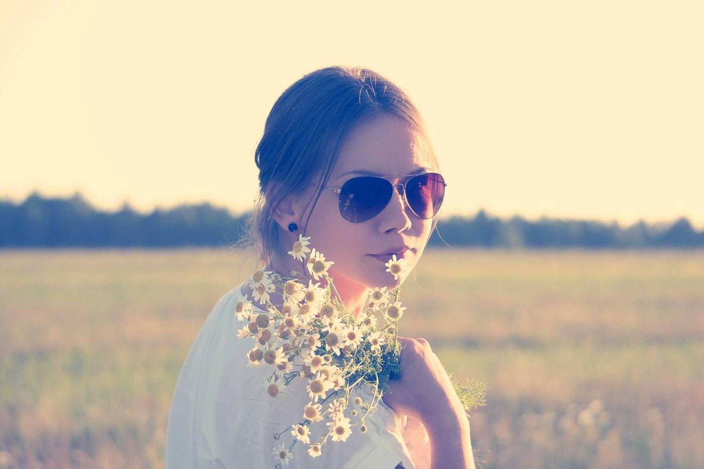
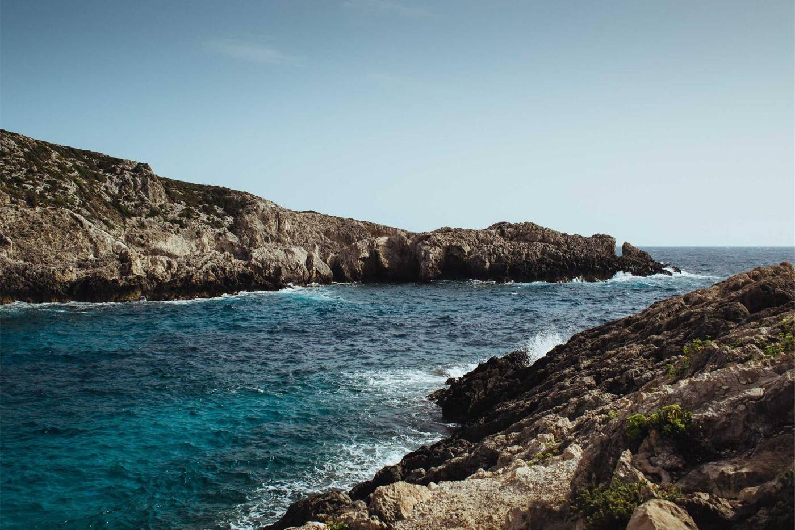
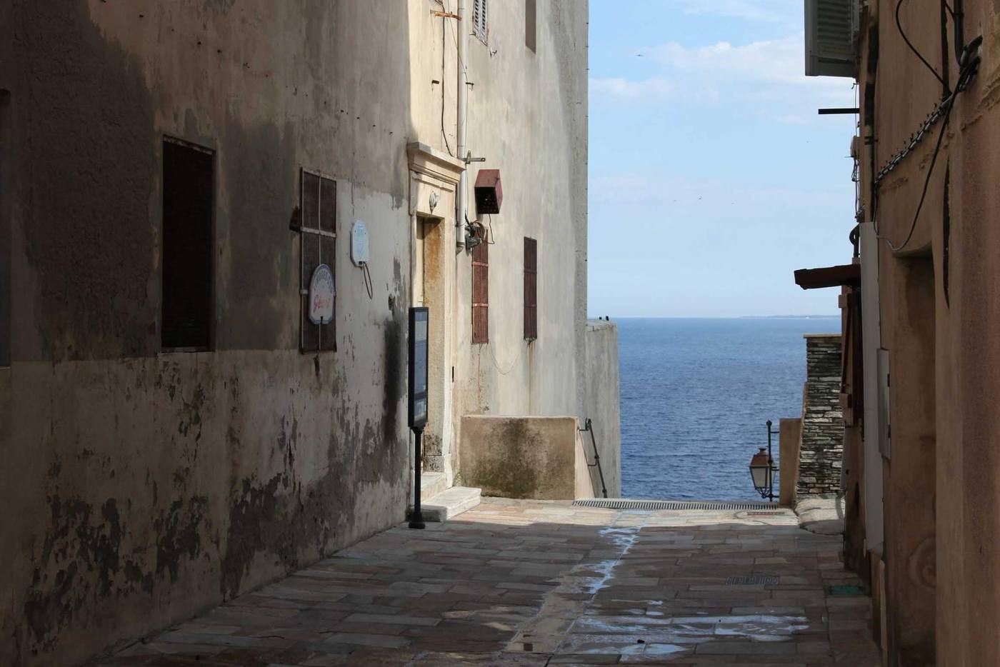
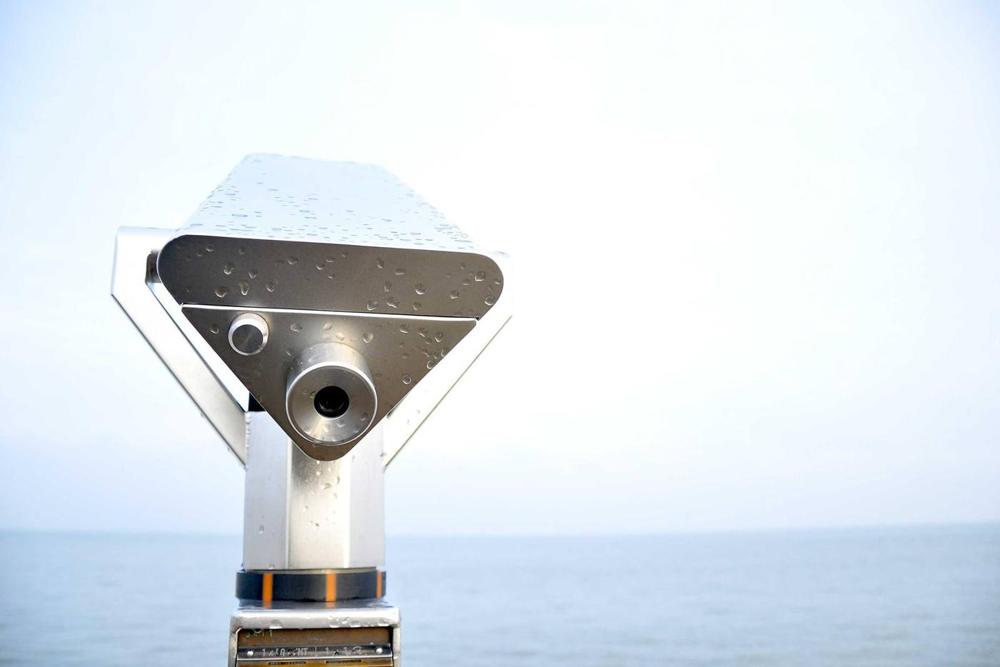
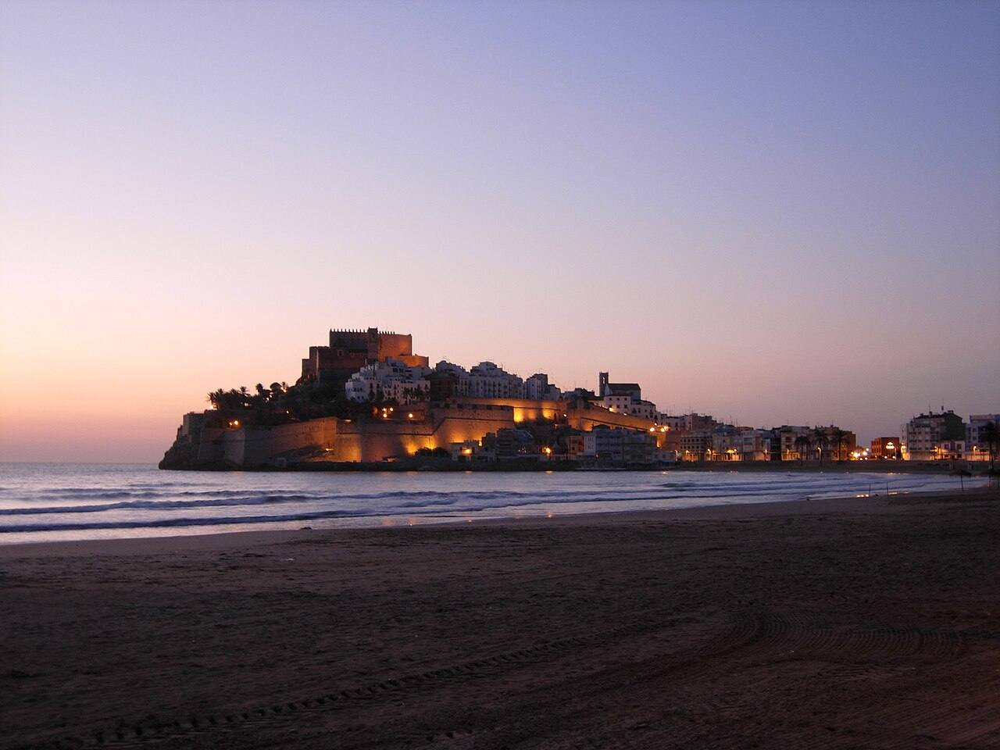

El mar, a través del cristal
Verde G‑15El verde clásico de las gafas de aviador.
Mira el mar con cada cristal
El verde clásico de las gafas de aviador. Deja pasar los colores casi como son y descansa la vista en días de mucha luz, como en la playa del Morrongo a mediodía.
- Luz que deja pasar
- 15 %
- Protección UV
- 100 % UV400
- Graduable
- Sí, también en progresivo
Gafas de sol para esta luz
En la costa del Maestrat el sol rebota en el mar, en la arena y en las paredes blancas. Elige montura en la tienda y prueba el cristal fuera, en la calle, con la luz de verdad.


Agua clara y roca: aquí los reflejos se notan.
Lo que hacemos y lo que cuesta
Servicios
- VistaRevisión completa de la vistaGratis
- VistaControl de vista infantilGratis
- VistaMedida de la presión ocularGratis
- Gafas graduadasMonofocales, montura y cristalesdesde 89 €
- Gafas graduadasProgresivos, montura y cristalesdesde 249 €
- Gafas graduadasOcupacionales para ordenadordesde 149 €
- SolGafas de sol de marcadesde 99 €
- SolGafas de sol graduadasdesde 159 €
- LentillasAdaptación y primera pruebaGratis
- LentillasMensuales, caja de 6desde 24 €
- TallerAjuste, tornillos y plaquetasGratis
- TallerCambio de cristales en tu monturadesde 59 €
Cómo graduamos tu vista
Primero, la revisión. Te sentamos frente al optotipo y medimos cada ojo por separado, de lejos y de cerca. Si llevas gafas, tráelas: comparamos tu graduación de ahora con la de antes.
Después, la prueba. Con la gafa de prueba confirmamos la graduación caminando por la tienda y leyendo de cerca. Así eliges el tipo de cristal sabiendo cómo vas a ver.
Al final, la entrega. En unos días tienes tus gafas montadas. Te las ajustamos a la cara en la tienda y, si en el primer mes algo no va, lo revisamos sin coste.
La tienda
- Abierta desde
- 1994
- Dónde
- Mercat, 7‑bis, Benicarló
- Comarca
- Baix Maestrat, Castellón
Llevamos más de treinta años en el bajo del 7‑bis, al lado del Mercat. Por aquí han pasado las primeras gafas de muchos niños de Benicarló y los progresivos de sus abuelos.
Graduamos, montamos y ajustamos en la propia tienda. Y cuando vienes por unas gafas de sol, te dejamos probarlas en la puerta, con la luz de verdad.

En la tienda
Monturas y sol
- Ray-BanSol y graduado
- PersolSol
- OakleyDeporte
- Vogue EyewearGraduado
- CarreraSol
- Marca propiaGraduado
Cristales y lentillas
- MonofocalesTodas las graduaciones
- ProgresivosA medida
- Filtro luz azulOrdenador
- FotocromáticosSe oscurecen al sol
- LentillasDiarias y mensuales
- LíquidosSiempre en stock
Lo que más nos preguntáis

¿Necesito cita para revisarme la vista?
Es mejor pedirla, porque la revisión dura unos veinte minutos y así no esperas. Si pasas sin cita y hay hueco, te atendemos en el momento.
¿Cuánto tardan unas gafas graduadas?
Las monofocales suelen estar en dos o tres días laborables. Los progresivos se fabrican a medida y tardan alrededor de una semana.
¿Puedo poner cristales nuevos en mi montura?
Sí. Revisamos que la montura esté en buen estado y te montamos los cristales nuevos con tu graduación actual.
¿Las gafas de sol se pueden graduar?
La mayoría de monturas de sol admiten cristales graduados, también polarizados y progresivos. Te decimos en la tienda qué modelos lo permiten.
¿Qué diferencia hay entre polarizado y tintado?
El tintado oscurece la luz. El polarizado, además, corta los reflejos del agua y del asfalto mojado. Para el mar, la pesca o conducir, se nota mucho. Pruébalo arriba, en el probador de cristales.
¿Adaptáis lentillas por primera vez?
Sí. Medimos el ojo, te enseñamos a ponerlas y quitarlas y te damos unas de prueba. Volvemos a revisarte a la semana para ver cómo van.
Peñíscola al amanecer

Peñíscola al amanecer, a 7 km de la tienda.
Ven a vernos o pide cita para revisarte la vista.
Mercat, 7‑bisBenicarló
- Lunes a viernes
- 9:30 – 13:30
- 17:00 – 20:30
- Sábado
- 9:30 – 13:30
- Tarde cerrado